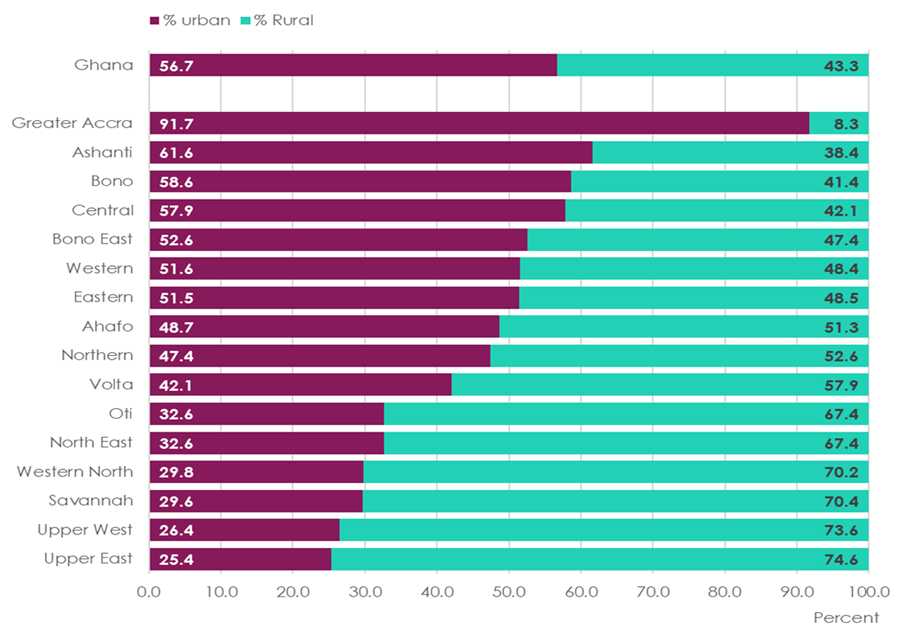

Administrative Map of Ghana
PREFACE
The Ghana 2021 Population and Housing Census (PHC) was conducted to provide updated demographic, social and economic data for research, policy and planning to support national development activities and to track the implementation of national, continental, and global development goals, such as The Coordinated Programme of Economic and Social Development Policies (2017-2024); An Agenda for Jobs: Creating Prosperity and Equal Opportunity for All; AU Agenda 2063: The Africa We Want; and Transforming Our World: The 2030 Agenda for Sustainable Development.
As Ghana’s first fully digital census, the 2021 PHC presents the country and the global community with timely data within three months of exiting the field. The report highlights the resourcefulness of the census, which is the only national data collection exercise that can provide the lowest levels of disaggregation to support decentralised decision making across the nation. The General Report, the third major census product release, presents the main results in eleven volumes, with each volume focusing on a different module of the 2021 PHC questionnaire.
This report compiles highlights of results across all the volumes: Population of Regions and Districts; Age and Sex Profile; Background Characteristics; Literacy and Education; Economic Activity; Difficulty in Performing Activities; Information and Communication Technology; Fertility and Mortality; Housing Characteristics; Water and Sanitation; and Structures.
The compilation is intended for readers needing a broader reflection on all the highlights from the 2021 PHC. The aim is to foster a collaborative and intersectoral approach in the development of planning targets and design policies of Government Ministries, Departments, and Agencies (MDAs), Metropolitan, Municipal and District Assemblies (MMDAs), development partners, civil society organisations (CSOs), private sector, researchers, and the public. The disaggregated statistics particularly, will support the identification of vulnerable groups for the development and delivery of targeted interventions.
CONTENT
Volume 3A : Population Of Regions and Districts
Volume 3B : Age and Sex Profile
Volume 3C : Background Characteristics
Volume 3D
Volume 3E
Volume 3F
Volume 3G
Volume 3H
Volume 3K
Volume 3M
Volume 3N
Volume 3A :
Population Of Regions and Districts
Ghana’s total population is 30,832,019 in 2021, which is five times that of 1960 (6,726,815).
FIGURE 1.1: POPULATION SIZE, 1921-2021 CENSUSES
Four regions (Greater Accra, 17.7%, Ashanti, 17.6%, Eastern, 9.5% and Central, 9.3%) contain more than half (54%) of the population.FIGURE 1.2: POPULATION DISTRIBUTION BY REGION
Annual inter-censual population growth rate between 2010 and 2021 is 2.1 percent, the lowest since independence.
Population growth rate between 2010 and 2021 varies across regions, from 3.7 percent in the Northern Region to 1.0 percent in the Eastern Region.
FIGURE 1.3: ANNUAL INTER-CENSUAL GROWTH RATE BY REGION
Urban population continues to grow, increasing from 12,545,229 (50.9%) in 2010 to 17,472,530 (56.7%) in 2021 with almost half (47.8%) of the increase in Greater Accra and Ashanti regions.
Proportion of the population that is urban varies across the regions with the highest in Greater Accra Region (91.7%) and lowest in Upper East Region (25.4%).
Seven regions are urbanised. That is, more than half of the population in those regions live in urban areas.
FIGURE 1.4: SHARE OF THE URBAN-RURAL POPULATION BY REGION
Urban and rural populations increased in all regions between 2010 and 2021 except Eastern and Ahafo regions where rural population decreased.
FIGURE 1.5: PERCENTAGE CHANGE IN POPULATION BY REGION; 2010 - 2021
Overall, there are more females (8,961,329) in urban areas than males (8,511,201). But in rural areas, there are slightly more males (6,689,239) than females (6,670,250).
FIGURE 1.6: PROPORTION OF MALE-FEMALE POPULATION BY TYPE OF LOCALITY
National population density, which is the number of persons occupying a square kilometre of area, increased by 26 persons between 2010 (103) and 2021 (129).
Greater Accra region recorded the highest increase of 445 persons (from 1,236 to 1,681), while Savannah region recorded the lowest of 6 persons (from 13 to 19).
FIGURE 1.7: CHANGE IN POPULATION DENSITY BY REGION; 2010 - 2021
Average household size is 3.6, the lowest recorded in the last six decades, and decreased by one person (0.9) since 2010 (4.5).
FIGURE 1.8: AVERAGE HOUSEHOLD SIZE BY REGION; 2010 AND 2021
Average household size decreased in all the regions with four regions (Northern, Savannah, North East and Upper West) reducing by two or more persons since 2010.

FIGURE 1.9: CHANGE IN THE AVERAGE HOUSEHOLD SIZE BY REGION; 2010 -2021
Average household size decreased between 2010 and 2021 in both urban (from 4.1 to 3.3) and rural (from 5.0 to 4.0) areas.
FIGURE 1.10: AVERAGE HOUSEHOLD SIZE BY TYPE OF LOCALITY
Volume 3B :
Age and Sex Profile
Ghana’s population age structure is transitioning from one dominated by children (0-14 years) to one dominated by young people (15-35 years): The proportion of children declined from 41.3 percent in 2000 to 35.3 percent in 2021, while that of young people increased from 34.6 percent in 2000 to 38.2 percent in 2021.FIGURE 2.1: POPULATION PYRAMID
The transitioning of the population from children to young people is evident in all regions and in urban areas. In urban areas, Greater Accra depicts the most pronounced transition while in rural areas across all the regions, the transition is yet to occur.FIGURE 2.2: 2021 POPULATION PYRAMID BY REGION AND TYPE OF LOCALITY
The transitioning of the population from children to young people is evident in all regions and in urban areas. In urban areas, Greater Accra depicts the most pronounced transition while in rural areas across all the regions, the transition is yet to occur.FIGURE 2.3: 2021 POPULATION PYRAMID BY TYPE OF LOCALITY
Females (15,631,579) outnumber males (15,200,440) by 437,139 (2.8%) and also in urban areas ( by 5.0%). However, in rural areas males outnumber females by 0.3 percent.
Also in six regions, males outnumber females, ranging from 5.1 percent in Western North to 0.5 percent in Bono East.
Male population below 20 years outnumber their female counterparts in all regions except Greater Accra.
Age group 30-64 years (predominantly the working age category) is dominated by males in Western North, Ahafo and Western regions.
FIGURE 2.4: MALE-FEMALE POPULATION DIFFERENCE BY REGION
About six in 10 people (58.2% – 17,931,673) are 18 years or older.FIGURE 2.5: POPULATION 18 YEARS AND OLDER BY SEX
A Six in 10 persons (60.4% - 18,619,021) are 15-64 years. In six regions, the proportions are higher than the national average: Greater Accra (66.5%), Western (62.2%), Ashanti (61.4%), Bono (61.3%), Western North (60.8) and Eastern (60.6%).
Age dependency ratio is 66, implying that there are 66 persons in the dependent age bracket (children 0-14 years and the elderly 65+ years) for every 100 persons in the working age bracket (15-64 years).
At the national level, 4.3 percent are 65 years and above. The proportions are higher in six regions than the national average: Volta (6.8%), Upper East (6.3%), Eastern (5.7%), Upper West (5.3%), Central (4.6%) and Bono (4.5%).FIGURE 2.6: WORKING AGE AND DEPENDENT POPULATION
Volume 3C :
Background Characteristics
Only one percent (294,341) of enumerated population are non-Ghanaians and nine in 10 non-Ghanaian population (270,838 – 92.0%) are from ECOWAS countries.
Nationals from Asia (11,313) are more than twice the number from the Americas (2,788) and Europe (3,102).FIGURE 3.1: POPULATION OF NON-GHANAIANS BY COUNTRY OF NATIONALITY AND REGION OF RESIDENCE IN GHANA
Only one percent (294,341) of enumerated population are non-Ghanaians and nine in 10 non-Ghanaian population (270,838 – 92.0%) are from ECOWAS countries.
Nationals from Asia (11,313) are more than twice the number from the Americas (2,788) and Europe (3,102).FIGURE 3.2: POPULATION OF NON-GHANAIANS BY COUNTRY OF NATIONALITY AND TYPE OF LOCALITY OF RESIDENCE
Higher proportion of never married persons (7,875,880), more than half of whom are men (4,459,622 or 56.6%), are in urban areas (5,180,522 or 65.8 %).FIGURE 3.3: POPULATION 15 YEARS AND OLDER BY MARITAL STATUS AND SEX
Four in five (80.8%) married persons have not registered their marriage. The proportions range from 59.9 percent in Greater Accra Region to 97.1 percent in Northern Region.FIGURE 3.4: REGISTRATION STATUS OF MARRIAGES (PERSONS AGED 15 YEARS AND OLDER) BY REGION
More married persons in urban areas (27.3%) compared to those in rural areas (9.3%) have registered their marriage.FIGURE 3.5: REGISTRATION STATUS OF MARRIAGE (PERSONS AGED 15 YEARS AND OLDER) BY TYPE OF LOCALITY AND SEX
Substantially more women than men are separated, divorced or widowed in both rural and urban areas.FIGURE 3.6: PROPORTION OF WIDOWED, SEPARATED AND DIVORCED PERSONS (AGED 15 YEARS AND OLDER) BY TYPE OF LOCALITY AND SEX
Higher proportion of males (73.6%) than females (71.6%) were enumerated in the localities where they were born.FIGURE 3.7: POPULATION BY PLACE OF BIRTH RELATIVE TO PLACE OF ENUMERATION AND SEX
Urban areas have higher proportions of Christians and Moslems than rural areas while other religions have higher proportions in rural areas.FIGURE 3.8: POPULATION BY RELIGIOUS AFFILIATION AND TYPE OF LOCALITY
Seven in ten persons (68.6 %) have health insurance coverage with higher coverage for females (72.6%) than males (64.5%).
Health insurance coverage ranges from 51.9 percent in Oti Region to 86.2 percent in Upper East Region and is higher for females than males in all regions.FIGURE 3.9: POPULATION BY HEALTH INSURANCE COVERAGE AND SEX
Three (Akan, Mole-Dagbani and Ewe) out of the nine major ethnic groups constitute more than three-quarters (77%) of the population.FIGURE 3.10: POPULATION BY MAJOR ETHNIC GROUPS